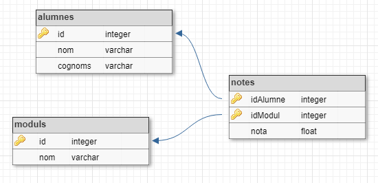

Donades les tuples de les següents relacions:
 Realitza la següent consulta:
SELECT cognoms, nom, moduls.nom AS modul, nota
FROM alumnes
JOIN notes ON alumnes.id = notes.idAlumne
JOIN moduls ON moduls.id = notes.idModul
Input Format
La entrada consisteix en les tuples per a les taules 'alumnes', 'moduls' i 'notes'. En primer lloc va el nombre de tuples i després les tuples, cadascuna en una línia.
Per a la taula alumnes el format de cada tupla és:
id cognoms, nom
Per a la taula moduls el format és:
id nom
Per a la taula notes el format és:
idAlumne idModul nota
Constraints
No hi ha cap restricció significativa
Output Format
La sortida serà el resultat de la consulta en format taula:
cognoms|nom|modul|nota
-------+---+-----+----
| | |
L'amplada de cada columna serà igual a la longitud màxima dels seus valors. La nota s'haurà de posar amb dos decimals.
Tot el text s'ha d'aliniar a la dreta.
Per últim caldrà indicar el número de tuples retornades per la consulta: "(X rows)"
Sample Input 0
2
1 Turing, Alan
2 Codd, Edgar
2
1 Programacio
2 Bases de dades
4
1 1 10
1 2 9
2 1 9
2 2 10
Sample Output 0
cognom|nom |modul |nota
------+-----+--------------+-----
Turing|Alan |Programacio |10.00
Turing|Alan |Bases de dades| 9.00
Codd |Edgar|Programacio | 9.00
Codd |Edgar|Bases de dades|10.00
(4 rows)
Sample Input 1
1
4096 Von Neumann, John
1
128 Fonaments de Hardware
1
4096 128 10
Sample Output 1
cognom |nom |modul |nota
-----------+----+---------------------+-----
Von Neumann|John|Fonaments de Hardware|10.00
(1 rows)
Sample Input 2
3
101 Torvalds, Linus
203 Cerf, Vint
443 Rubin, Andy
4
12 Implantacio de sistemes operatius
23 Programacio
41 Planificacio i administracio de xarxes
15 Programacio multimedia i dispositius mobils
8
101 12 10
101 41 8
203 12 7
203 31 10
203 12 7
443 12 10
443 41 9
443 23 8
Sample Output 2
cognom |nom |modul |nota
--------+-----+-------------------------------------------+-----
Torvalds|Linus|Implantacio de sistemes operatius |10.00
Torvalds|Linus|Planificacio i administracio de xarxes | 8.00
Cerf |Vint |Implantacio de sistemes operatius | 7.00
Cerf |Vint |Implantacio de sistemes operatius | 7.00
Rubin |Andy |Implantacio de sistemes operatius |10.00
Rubin |Andy |Planificacio i administracio de xarxes | 9.00
Rubin |Andy |Programacio | 8.00
(7 rows)
Sample Input 3
4
99 Codd, Edgar
76 Berners-Lee, Tim
47 Von Neumann, John
10 Marx, Karl
6
12 Gestio de bases de dades
13 Llenguatges de marques
14 Fonaments de maquinari
15 Planificacio i administracio de xarxes
16 Formacio i orientacio laboral
17 Empresa i iniciativa emprenedora
11
47 14 10
99 16 6
10 17 10
76 14 6
10 16 10
47 12 10
99 12 10
47 13 10
76 13 10
10 15 5
47 15 10
Sample Output 3
cognom |nom |modul |nota
-----------+-----+--------------------------------------+-----
Codd |Edgar|Formacio i orientacio laboral | 6.00
Codd |Edgar|Gestio de bases de dades |10.00
Berners-Lee|Tim |Fonaments de maquinari | 6.00
Berners-Lee|Tim |Llenguatges de marques |10.00
Von Neumann|John |Fonaments de maquinari |10.00
Von Neumann|John |Gestio de bases de dades |10.00
Von Neumann|John |Llenguatges de marques |10.00
Von Neumann|John |Planificacio i administracio de xarxes|10.00
Marx |Karl |Empresa i iniciativa emprenedora |10.00
Marx |Karl |Formacio i orientacio laboral |10.00
Marx |Karl |Planificacio i administracio de xarxes| 5.00
(11 rows)
Sample Input 4
7
87 Dijkstra, Edsger
10 Knuth, Donald
1 Floyd, Robert
23 Thompson, Ken
56 Ritchie, Dennis
96 Kay, Alan
44 Liskov, Barbara
1
106 Programacio basica
7
87 106 10
10 106 10
1 106 10
23 106 10
56 106 10
96 106 10
44 106 10
Sample Output 4
cognom |nom |modul |nota
-------+-------+------------------+-----
Dijkstra|Edsger |Programacio basica|10.00
Knuth |Donald |Programacio basica|10.00
Floyd |Robert |Programacio basica|10.00
Thompson|Ken |Programacio basica|10.00
Ritchie|Dennis |Programacio basica|10.00
Kay |Alan |Programacio basica|10.00
Liskov |Barbara|Programacio basica|10.00
(7 rows)